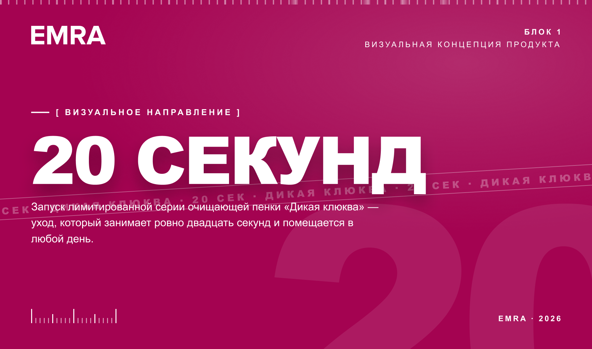
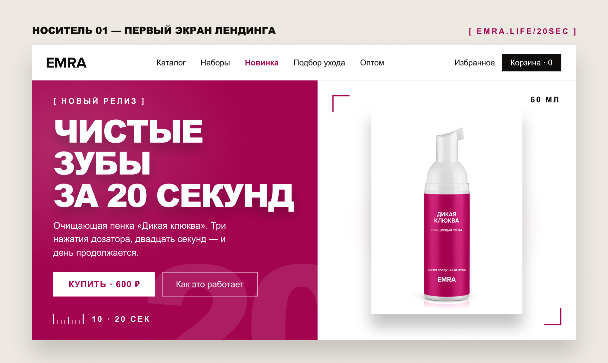
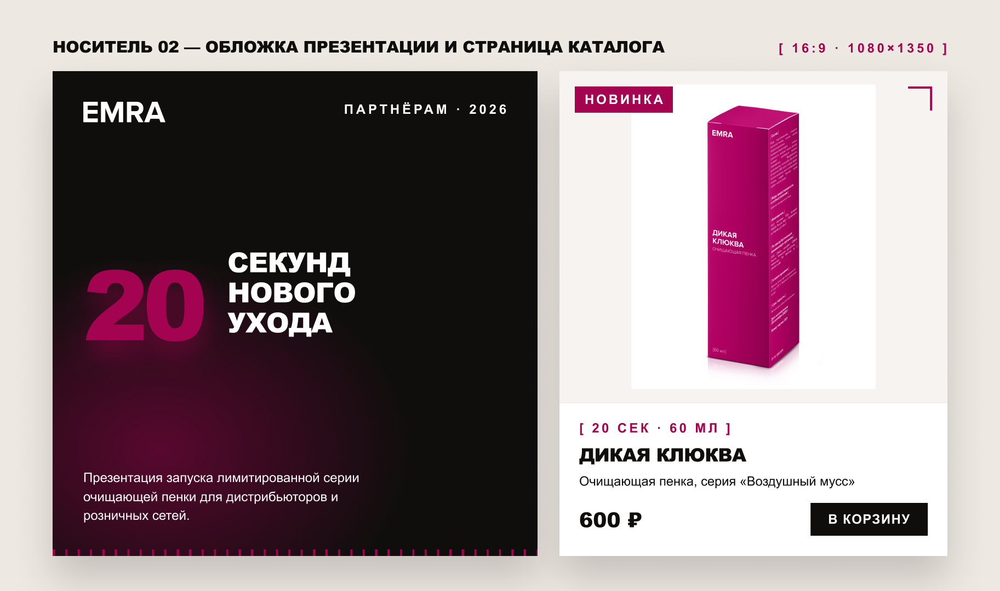
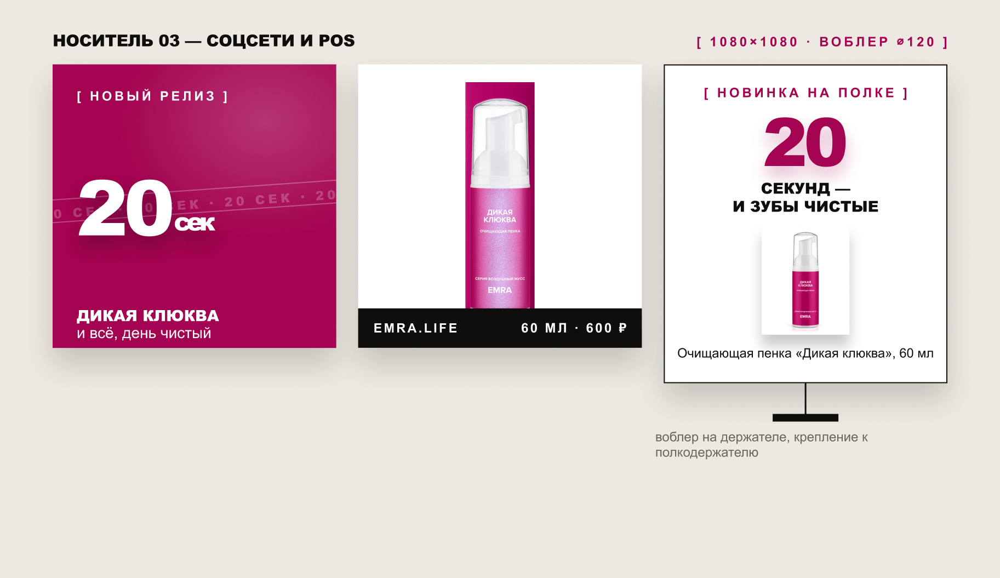

Кампания · веб-дизайн
EMRA
Концепция запуска лимитированной серии очищающей пенки «Дикая клюква»: ключевой визуал, первый экран лендинга, каталог и материалы для соцсетей.
Скачать PDF




Кампания · веб-дизайн
Концепция запуска лимитированной серии очищающей пенки «Дикая клюква»: ключевой визуал, первый экран лендинга, каталог и материалы для соцсетей.
Скачать PDF


